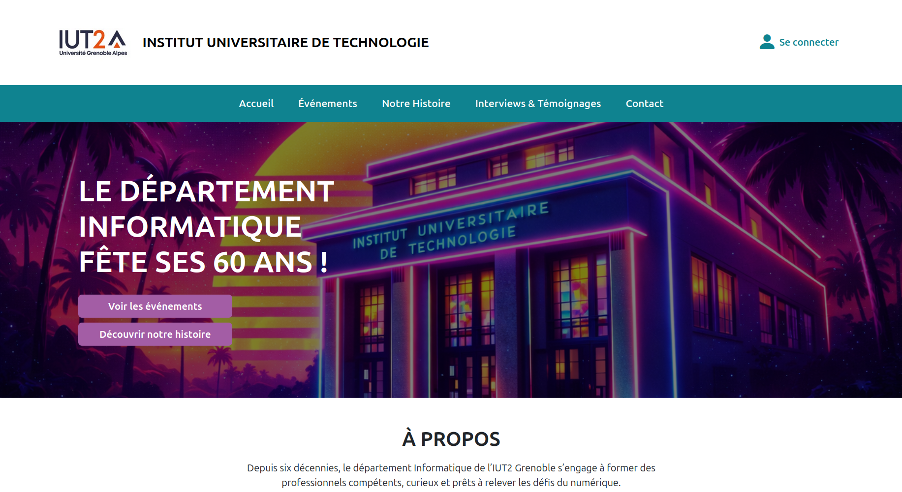
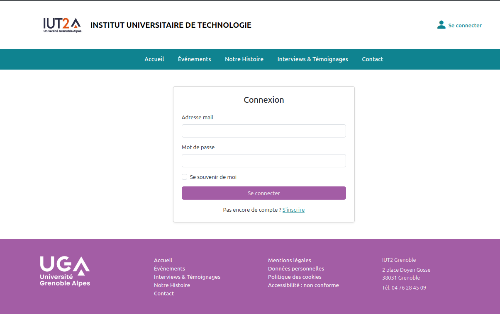
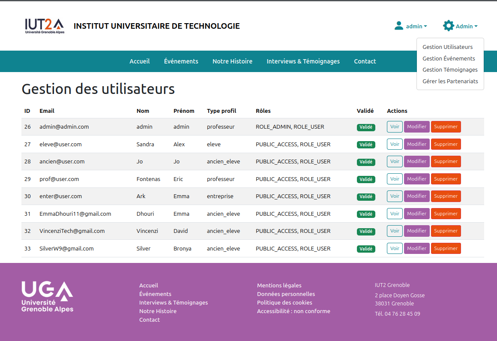
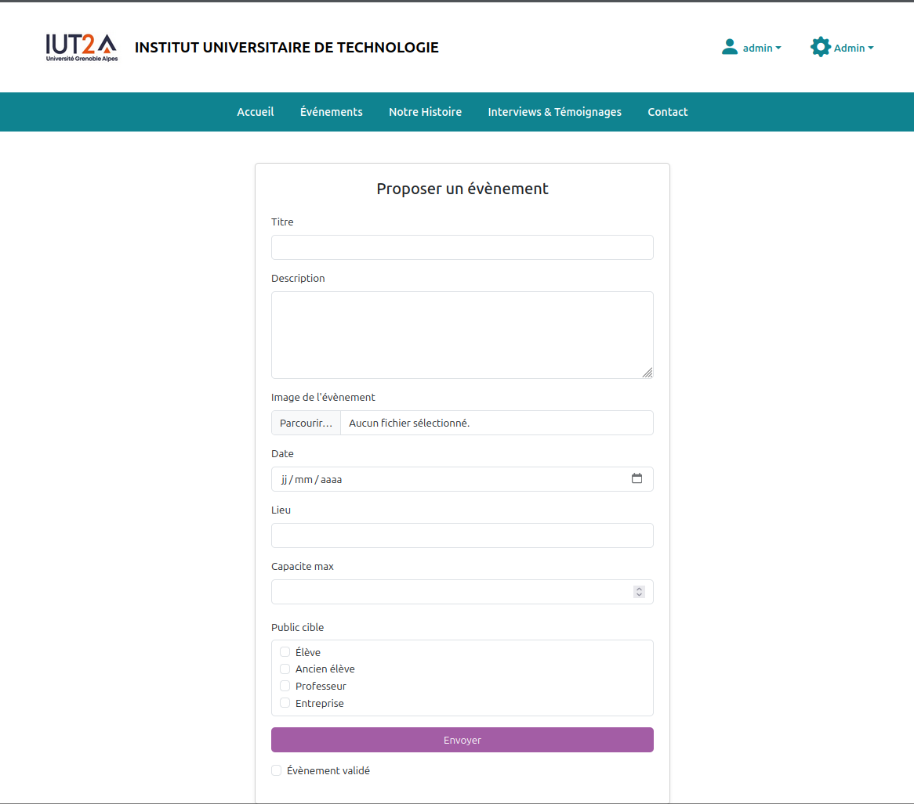
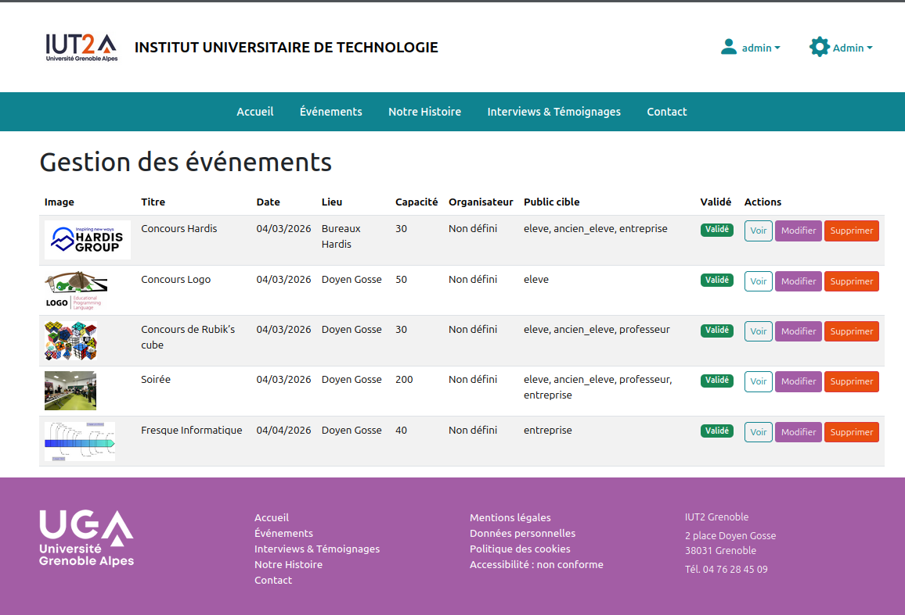
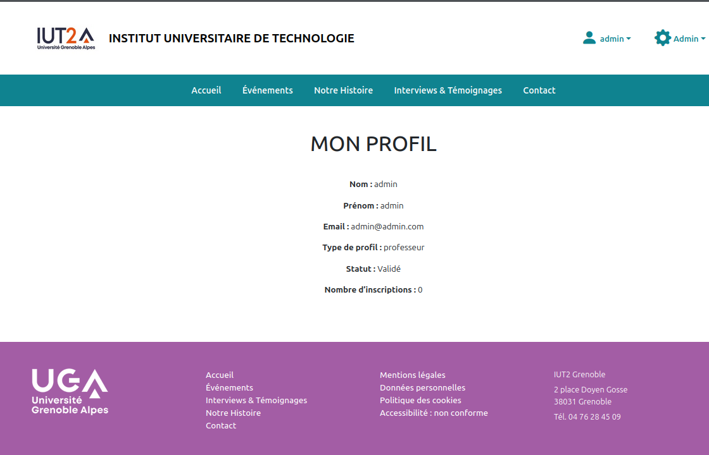
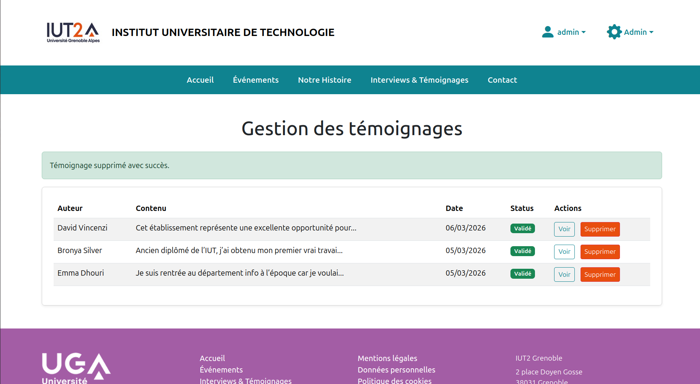

Plateforme Web de Gestion Événementielle







Description
Ce projet a été réalisé dans le cadre d’un travail universitaire visant à créer une plateforme complète pour célébrer les 60 ans du Département Informatique de l’IUT2 Grenoble. Le site permet la gestion des événements, des témoignages, des partenaires, ainsi que la mise en avant de l’histoire du département. J’ai travaillé sur la structure Symfony, les entités, les contrôleurs, le back-office, ainsi que sur l’interface utilisateur et l’organisation générale du projet.
Informations
- Durée : 4 mois
- Personnes : 4 personnes
- Type : Projet universitaire (Symfony)
Fonctionnalités
- Gestion des événements (CRUD complet).
- Ajout et affichage de témoignages.
- Gestion des partenaires et sponsors.
- Back-office sécurisé pour l’administration.
- Front-office moderne et responsive.
Aspects techniques
- Architecture MVC avec Symfony.
- Base de données relationnelle (MySQL).
- Formulaires dynamiques et validation Symfony.
- Templates Twig personnalisés.
- Organisation modulaire du code et réutilisabilité.